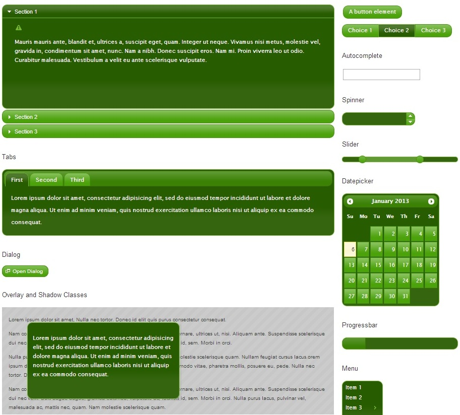

Web-basierte Anwendungen 1
Java Script Frameworks
10. Januar 2013
Studiengang Medieninformatik an der Fachhochschule Köln
Campus Gummersbach
Roy Fochtman
Stefan Börgeling
Inhalte
- Was ist ein Framework?
- Vor- und Nachteile
- Übersicht bekannter JS-Frameworks
- Übung
Was ist ein Framework?
- Kein Programm
- Programmiergerüst, das bestimmte Funktionalitäten bereitstellt
- Beinhaltet eine Bibliothek mit nützlichen Codestrukturen
Vor- und Nachteile
Vorteile
- In der Regel Kostenlos
- Einfach einzubinden
- Weniger Schreibarbeit
- Fertige Widgets und Animationen
- Code frei verfügbar
- Code anpassbar
Vor- und Nachteile
Nachteile
- Frameworks haben unterschiedliche Syntax
- Inkompatibilitäten bei paralleler Nutzung von JS-Frameworks
Übersicht bekannter JS-Frameworks
- jQuery
- Mootools
- Dojo Toolkit
- Yahoo User Interface Library
- ExtJS
Übersicht bekannter JS-Frameworks
jQuery
- Weit verbreitet
- Ständige Weiterentwicklung
- Viele Plug-ins und Erweiterungen
Übersicht bekannter JS-Frameworks
jQuery UI
- Bietet viele Effekte
- Viele Designs
Übersicht bekannter JS-Frameworks
jQuery UI Beispiel

Übersicht bekannter JS-Frameworks
jQuery UI Beispiel
Übersicht bekannter JS-Frameworks
MooTools
- Hohe Browserkompatibilität
- Gute Dokumentation
Übersicht bekannter JS-Frameworks
Dojo Toolkit
- Mächtig
- Große Sammlung von Javascript-Dateien
- Beherrscht viele Javascript-Aufgaben
Übersicht bekannter JS-Frameworks
Yahoo User Interface Library
- Wird von Yahoo-Programmierern Weiterentwickelt
- Ausführliche Dokumentation
Übersicht bekannter JS-Frameworks
ExtJS
- Open Source oder kommerziell
- Hohe Browserkompatibilität
- Wird oft für komplexe Webanwendungen verwendet
Übersicht bekannter JS-Frameworks
Mobile
- jQuery Mobile
- Titanium Mobile
- The-M-Project
- Dojo Mobile
- Sencha Touch
Übung
- Einbindung
- Welche Frameworks benutzen die großen Seiten?
Übung
Einbindung von Javascript Frameworks
- Downloading jQuery:
- Alternative zum downloading:
Übung
Welche Frameworks benutzen die großen Seiten?
- Apple:
- scriptaculous, Prototype 1.7, Site Catalyst
- Amazon:
- jQuery 1.2.6, SWF Objekt
- Hotmail:
- jQuery 1.8.3
- Github:
- jQuery 1.8.3, Modernizr, Google Analytics